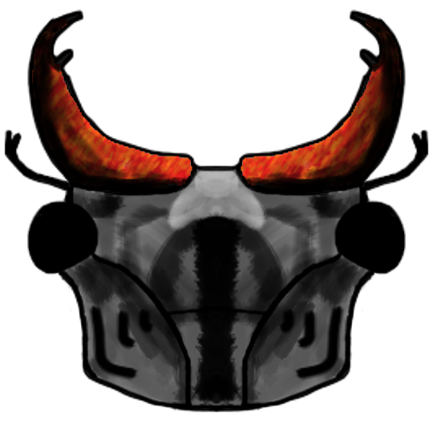

ITCH.IO GAME LISTING
Releasing the "pretty prototype" of Nectar of the Gods! I have been heads down working on this project for the last few months and it was really important to me to get a prototype out there so I could share with my friends and family to start to gather feedback. It's been so exciting learning the programming, art, and animation skills necessary to start to bring this vision together. I can't wait to iterate and make NotG closer to the game that's inside my head.
I feel good about the prototype capturing the goofy, charming, strategic bug battling game I am setting out to make. I set this prototype as version 0.01 because I know I have a really long way to go.
My goal for the final game is to include:
- 3 Bug Families
- 4 Game Modes (Story, Versus AI, 2 Player Local, 2 Player Online
- A whole lot of polish and balance across gameplay, visuals, audio, and fun.
This prototype includes:
- 1 Bug Family (Beetle Brigade)
- 1 Game Mode (Versus AI)
- Enough mechanics, art, and animations to get started!
I hope you'll join me on this journey to getting this game to launch! I would love any and all feedback
Love, Ben